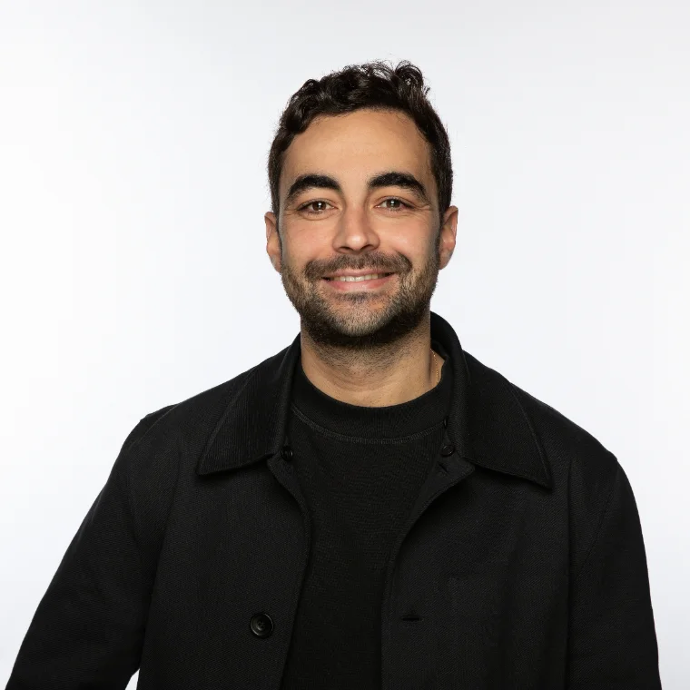

Conseil en IA, automatisation & opérations — Casablanca · Amsterdam
L'IA doit améliorer votre résultat.
Sinon, ne la déployez pas. J'identifie où la technologie peut créer de la valeur, définis ce qu'il faut mettre en place et accompagne sa mise en œuvre.
Principe
Un chantier doit rapporter au moins cinq fois son coût la première année.
Modèle
Prix fixe, annoncé avant de commencer. Résultat mesuré.
Promesse
Une solution que vos équipes maîtrisent, sans dépendance.
Qui je suis
J'opère l'un des plus grands systèmes d'IA de support client au monde.

Fondateur, Cadence
Je dirige l'automatisation du support client d'Uber Eats après commande : un système d'IA en production dans 51 pays et 11 langues, que j'ai conçu, déployé et que j'opère au quotidien.
Je ne vends pas des idées. J'ai porté personnellement la responsabilité d'un système dont dépendent des millions de commandes, avec les erreurs, les arbitrages et les corrections que cela implique.
Je sais mesurer si l'IA fonctionne. Et je sais surtout quand ne pas l'utiliser : la moitié de mon travail consiste à refuser des projets qui ne rapporteraient pas leur coût.
- 51
pays — système en production, opéré au quotidien
- 11
langues, dont le français et l'arabe
- 15 M$
d'économies annuelles, impact mesuré sur le périmètre que j'opère
- 20 M$
de volume incrémental, chiffre d'affaires additionnel mesuré
École Centrale Paris · Universidad Politécnica de Madrid. Français, arabe / darija, espagnol, anglais.
La méthode
Commencer par le résultat. La technologie vient ensuite.
Une technologie n'a de valeur que si elle améliore un chiffre qui compte : marge, temps récupéré, vitesse commerciale ou capacité opérationnelle.
Je travaille sur le sujet de bout en bout : comprendre l'opération, chiffrer le potentiel, définir la bonne solution et accélérer sa mise en œuvre. Selon le chantier, je travaille avec vos équipes, construis moi-même ou fais intervenir le bon spécialiste.
La technologie vient ensuite. Il peut s'agir d'un outil existant, d'un développement interne, d'un partenaire spécialisé — ou de rien du tout. Si les chiffres ne justifient pas le projet, je ne le recommande pas.
La règle des 5×
Je ne recommande un chantier que si le gain attendu la première année vaut au moins cinq fois son coût total.
Mon prix, votre temps, les outils et le coût du changement : tout compte. Les estimations sont toujours optimistes. La marge de sécurité est volontaire : un projet qui rapporte « peut-être un peu » ne mérite pas votre attention.
Conséquence : je refuse des missions. C'est le prix de la confiance.
Chiffres fictifs. Le coût total inclut mon prix, votre temps et les outils. En dessous de 5×, je ne recommande pas le chantier.
L'offre
Trois étapes, dans l'ordre. Vous pouvez vous arrêter après chacune.
01
Audit
2–3 semaines · prix fixe
Je passe du temps dans votre opération, avec vos chiffres et vos équipes. Le livrable garde sa valeur même si nous ne travaillons plus jamais ensemble.
- Décomposition chiffrée des pertes
- 2–3 chantiers qui passent la règle des 5×
- Coût, gain et effort pour chacun
- Recommandation : construire, acheter, déléguer ou ne rien faire
02
Conception
Durée selon chantier · prix fixe
Pour le chantier retenu : définition de la solution, critères de réussite mesurables, choix entre développement interne, outil existant ou partenaire, et prototype lorsque cela permet de réduire le risque.
- Critères de réussite définis avant le code
- Prototype sur données réelles, lorsque pertinent
- Plan de mise en œuvre
- Décision claire : déployer ou arrêter
03
Mise en œuvre
Durée selon chantier · fixe + part au résultat
J'accompagne la mise en œuvre jusqu'au résultat. Selon le chantier, je construis moi-même, travaille avec vos équipes ou fais intervenir le bon spécialiste. Mon rôle reste le même : garder le cap sur le résultat et faire avancer le projet plus vite.
- Pilotage et accélération de la mise en œuvre
- Construction, coordination ou sélection du bon partenaire
- Mesure des résultats contre les critères définis
- Transfert aux équipes, sans dépendance
Chaque étape est autonome. Prix annoncé avant de commencer, aucun engagement sur l'étape suivante.
Parler de votre opérationChantiers types
Là où l'automatisation change le compte de résultat.
Marge
Prévision et pertes
Food, retail, multi-sites
Prévoir la demande par site et par jour pour réduire les invendus sans créer de ruptures.
Vitesse
Réponse commerciale
B2B, logistique, négoce
Automatiser cotation et traitement documentaire pour répondre en heures, pas en jours.
Temps
Support client
Volume de demandes récurrentes
Traiter automatiquement les demandes répétitives et router le reste vers la bonne personne, en français et en darija.
Temps
Back-office documentaire
Douane, facturation, conformité
Extraire, vérifier et saisir automatiquement les documents qui occupent aujourd'hui des personnes entières.
Ce que je ne fais pas
Les limites font partie de l'offre.
Pas de « transformation digitale ».
Des chantiers délimités, avec un chiffre à la fin.
Pas d'équipe de juniors.
La personne que vous rencontrez est celle qui fait le travail.
Pas d'outil à pousser.
Je ne touche aucune commission de fournisseur.
Pas de promesse invérifiable.
Chaque système a un critère de réussite et une mesure.
Première étape
Trente minutes. Votre opération, pas une présentation.
Vous me montrez comment l'entreprise fonctionne, où les équipes passent leur temps et où le chiffre se perd.
Si je vois un chantier qui passe la règle des 5×, je vous propose un audit. Si je ne vois rien, je vous le dis — et je vous aurai au moins posé de meilleures questions.
Ou par écrit : otman.echcherifelkettani@gmail.com